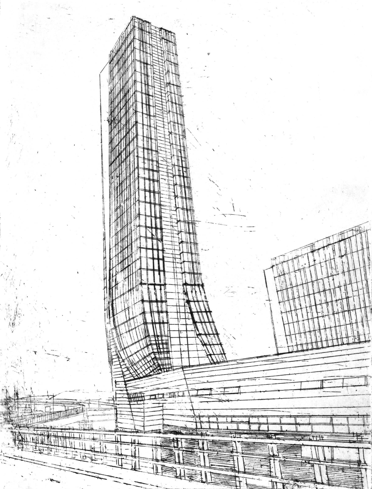
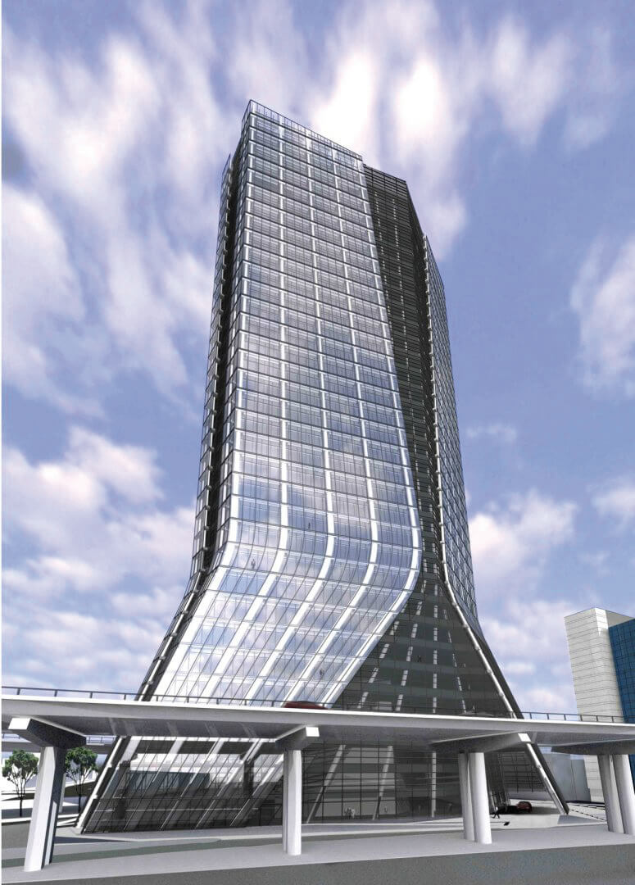
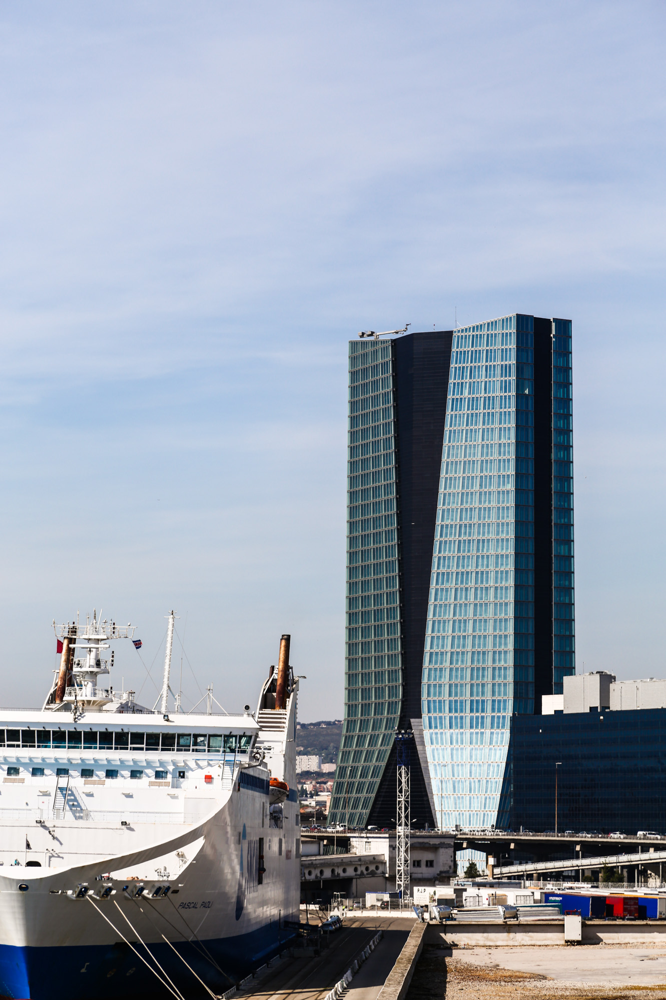
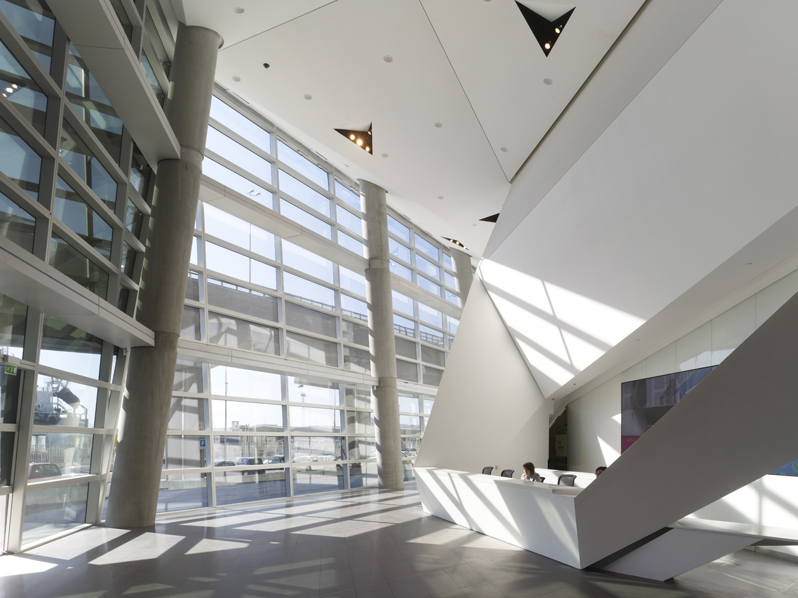

La tour CMA CGM du projet Euroméditerranée à Marseille, France
La Tour CMA CGM du projet Euroméditerranée à Marseille, France, est une réalisation architecturale majeure signée Zaha
Hadid.

Croquis de la tour CMA CGM du projet Euroméditerranée à Marseille, France par ZahaHADID
Inaugurée en 2011, cette tour emblématique s'élève majestueusement au cœur du quartier Euroméditerranée, incarnant
l'élégance contemporaine et l'innovation. Les courbes dynamiques de la structure évoquent un mouvement fluide, reflétant
l'importance du port méditerranéen et de Marseille en tant que centre économique.


Extérieur de la tour CMA CGM du projet Euroméditerranée à Marseille, France
La Tour CMA CGM devient ainsi un symbole architectural de la modernité, intégrant parfaitement le tissu urbain tout en
ajoutant une touche futuriste à l'horizon marseillais. En explorant cette œuvre architecturale, les visiteurs découvrent
l'audace créative de Zaha Hadid et son impact sur la renaissance urbaine de Marseille.

Intérieur de la tour CMA CGM du projet Euroméditerranée à Marseille, France